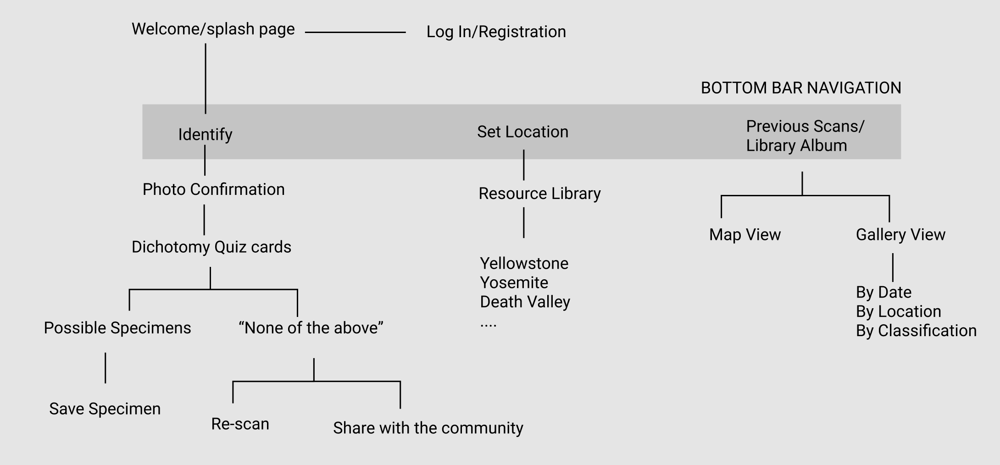
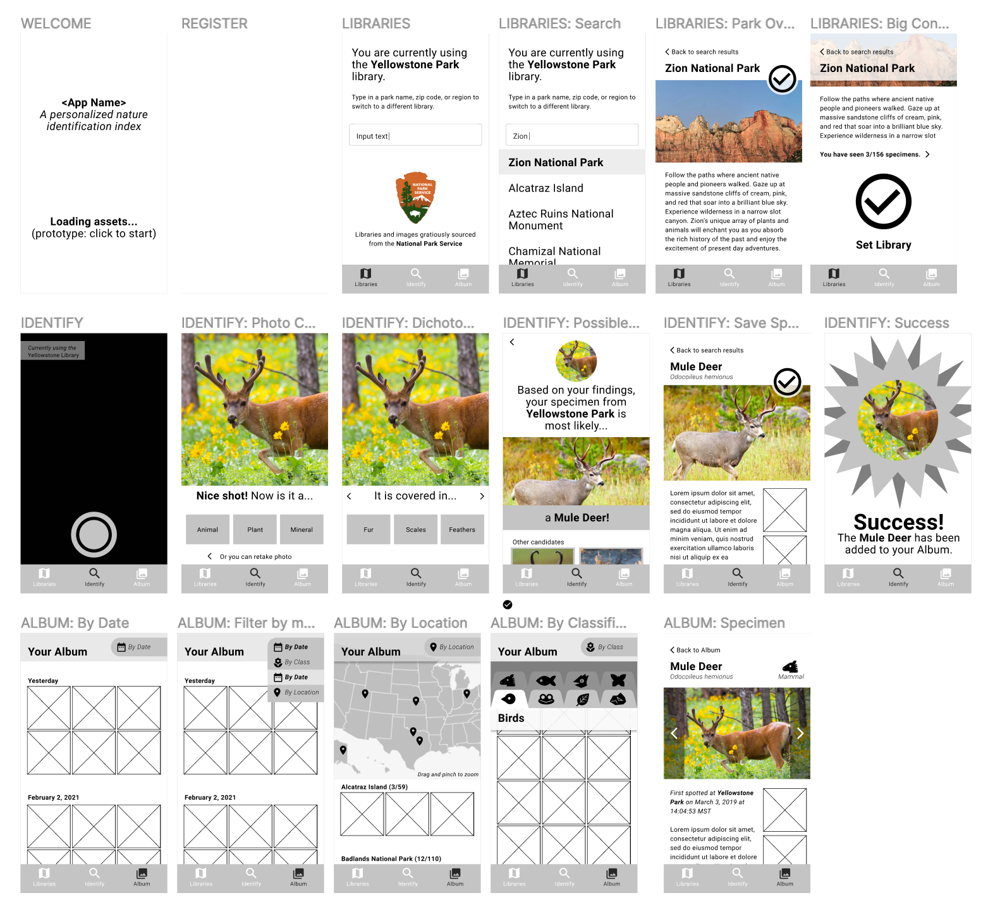

Scout
Overview
Scout is a pocket field guide for the explorer enjoying National Parks. In this project I exercised user testing, brand design, and prototyping.
Spotting Opportunity
I was inspired to design Scout from my typical experience in group hikes: I spot an interesting plant or animal but would fail to communicate what it was. Upon sharing the struggles of my travels, I realized I wasn’t the only one yearning to learn more on the go: my friends would empathize and reminisce on anonymous critters in their past walks. Furthermore, with the existence of apps like iNaturalist, it was apparent that this was a universal phenomenon.
Understanding
As a first step, I scoped for more information regarding people’s relationship with hiking and nature. I organized group interviews of self-proclaimed hikers and charted my observations in three personas.
Based on these personas, I drafted an ideal mental map of how a target user would integrate an app like Scout in their typical nature walks.
Development
I started my process with a site map to visualize the navigation and user flow. I was inspired by the interactive and approachable qualities of dichotomous keys and adopted their utility as the means for identifying a specimen. I also prioritized access to resource materials [Library] and the user’s archive[Album] via the bottom navigation.
Using Figma, I determined the architecture and composition of Scout’s screens with a low fidelity wireframe.
Upon play testing this lo-fi model with a group of volunteers, I learned how to improve the experience and discovered a new desire of my target user: a page to review their personal achievements.
Branding


I derived a color story pulled from swatches seen in nature resources such as National Geographic, Discovery, and other park guides. I emulated typefaces and imagery that felt native to existing hiking products and branding. Binoculars were selected to represent Scout because of its association to adventure and adjusting a bionculars’ focus emulates the wayfinding process.
Hi-Fi Model
Informed by branding iterations and revisions, I developed a high fidelity prototype using Figma and Adobe Illustrator for icons and graphics.
Getting started
The app loads with an introduction of Scout’s logo and purpose. Sign up is kept simple and short.Identifying specimens
After opening the app, Scout defaults to the identification tab Scout. When a user snaps a photo of their specimen, they will answer a series of question cards to determine what the specimen is.Accessing databases
In order to identify against relevant specimens based on location, the user will need to select the appropriate database in the Library tab.A walk down memory lane
Living in the moment is the goal, but Scout wants users to be able to look back on the specimens they’ve seen in their Album. Organizational filters allow for quick access for impromptu storytelling.High-level achievements
Statistics in the My Ranger tab gratify and inspire the user to countinue scouting and learning about more specimens.Takeaways
I'd love to launch a version of Scout at a small scale with local parks with a team of engineers. I found it rewarding and insightful to interview users that range from casual, easy-going hikers to those who make it their weekly activity and enjoy the outdoor splendor. In order to measure the success of Scout, I want to publish it to App stores and gather more feedback from real users.